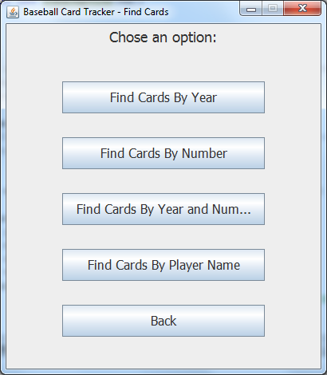
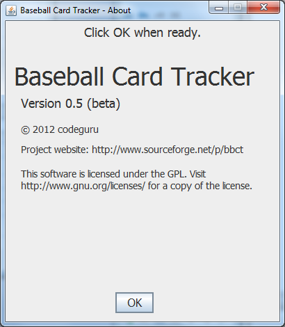

Baseball Card Tracker
© 2012 codeguru <codeguru@users.sourceforge.net>
This is the user manual for Baseball Card Tracker
Table of Contents
- Installation
- Running Baseball Card Tracker
- Main Menu
- Add Cards
- Find Cards Menu
- Find Cards By...
- Edit Cards
- About
Installation
Extract the contents of the "baseball.zip" file to your desktop or
any folder of your choice.
Return to Table of Contents
Running Baseball Card Tracker
Open the "bbct" folder and double-click on the "baseball.jar" file.
Return to Table of Contents
Main Menu

Buttons:
-
Add Cards - Click to add new cards to your collection.
-
Find Cards - Click to find cards and update their monetary value
and the number of cards you own.
-
About - Click to display information about this software,
including a copyright notice.
-
Exit - Click to exit the application.
Return to Table of Contents
Add Cards

The add cards window allows you to input details about a baseball
card in their collection. Data includes the card brand, year,
number, value, and count of cards owned, and the player's name and
position.
Buttons:
-
Add Card - Add the entered data and clear all fields so that
the user can enter data for the next card. This button is
not yet implemented.
-
Back - Return to the main menu.
Return to Table of Contents
Find Cards Menu

The find cards menu gives you the option to search by a card's year,
number, both year and number, or player's name.
Return to Table of Contents
Find Cards By...


Each of these windows allows you to enter the criteria for a card
search.
Buttons:
-
Find - Find cards in your collection which match the
search criteria and display the card details for editing.
-
Back - Return to the Find Cards menu.
Return to Table of Contents
Edit Cards

This window allows you to view each card that matches your search
criteria. You can also edit the monetary value and number of cards
you own.
Buttons:
-
<-- Previous - Go to the previous card which matched your search
criteria.
-
Next --> - Go to the next card which matched your search
criteria.
-
Done - Store your changes, if any, and return to the Find Cards
Menu.
Return to Table of Contents
About

The about screen displays a copyright notice for Baseball Card
Tracker. The OK button returns the user to the main screen.
Return to Table of Contents